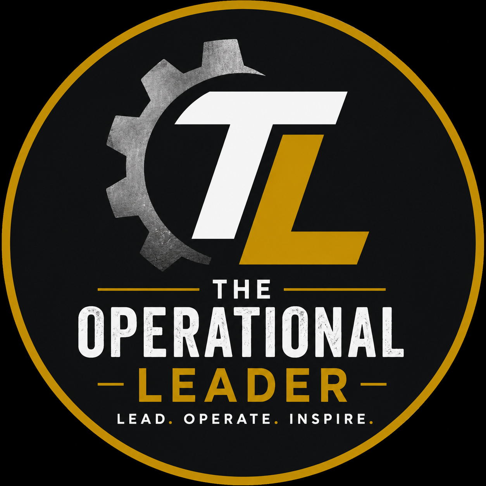

The Standard You Tolerate Becomes the Culture You Create
Culture is built by what leaders consistently allow, correct, reward, and protect.

The Operational LeaderArticles
Short, direct articles for frontline managers, supervisors, and operational leaders who want to lead with clarity, accountability, and consistency.
“Leadership is built through daily choices.”
Featured Articles
Culture is built by what leaders consistently allow, correct, reward, and protect.
Being good at the job does not automatically prepare someone to lead people.
Accountability is not punishment. It is clarity, respect, and leadership responsibility.
Culture
Every team has a culture. The question is whether that culture is being built intentionally or accidentally.
Leaders often talk about standards, accountability, communication, and teamwork. But culture is not built by what leaders say. It is built by what leaders consistently allow.
If poor communication is ignored, it becomes normal. If weak effort is excused, it becomes acceptable. If negativity is tolerated, it spreads. If accountability is inconsistent, trust begins to break down.
Small issues rarely stay small. They grow when leaders avoid the uncomfortable conversation. The longer a problem exists, the more difficult it becomes to correct.
Strong leaders protect the standard early. Not through ego. Not through fear. Through clarity, consistency, and respect.
The culture of your team is not determined by your intentions. It is determined by your standards. And your standards are revealed by what you are willing to tolerate.
New Managers
One of the biggest misconceptions in management is that the best worker automatically becomes the best leader.
Being great at the job matters. But leadership requires a different skill set.
As an individual contributor, success is mostly measured by your own performance. Your effort. Your production. Your results.
Leadership changes the equation. Now your success depends on communication, consistency, accountability, emotional control, decision-making, and your ability to develop others.
New leaders often struggle because they continue operating like the top performer instead of becoming the leader their team needs.
The shift is not easy. But it is necessary. Leadership is not about proving you can do everything yourself. It is about building a team that can succeed with clarity, trust, and direction.
Accountability
Accountability feels uncomfortable because it often requires leaders to step into tension instead of avoiding it.
Most leaders do not avoid accountability because they do not care. Many avoid it because they do care. They do not want conflict. They do not want someone upset. They do not want to damage the relationship.
But avoiding accountability does not protect relationships. Over time, it damages trust.
High performers notice when standards are inconsistent. They notice when poor effort is ignored. They notice when leadership refuses to address obvious problems.
Accountability is not punishment. Accountability is clarity. It tells people what matters, what is expected, and where improvement is needed.
The best leaders combine high standards with high care. They support people, but they also protect the standard. That is where trust is built.
The Operational Leader is building a practical library for managers who lead people, solve problems, and carry real responsibility.
Listen to the Podcast